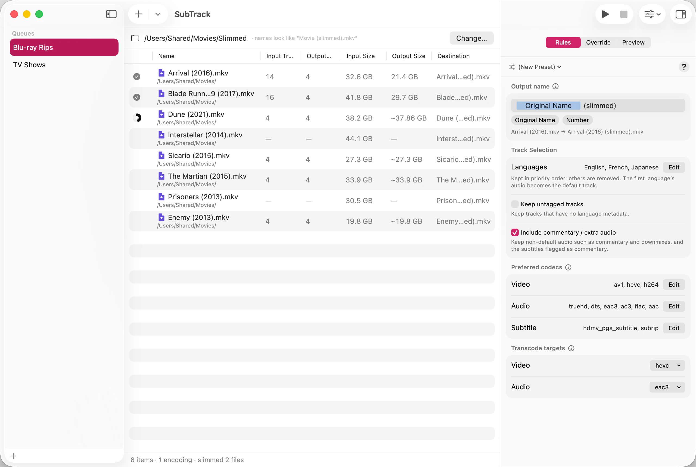

A Blu-ray or UHD remux often carries a dozen tracks: eight dubs you don’t speak, five subtitle languages you don’t read, and a commentary track you’ll never play. They’re most of the file size and none of the value.
SubTrack drops them. Everything you keep is written into a new file exactly as it was, and the result is a fraction of the size at identical quality.

Most video tools decode every frame and encode it again. That takes hours and costs quality every time, because the picture is thrown away and approximated afresh.
SubTrack doesn’t decode anything. A track you keep is copied from one container into another, byte for byte — the same compressed data, moved. There is no generation loss because nothing is regenerated, and the work is limited by how fast your disk reads rather than how fast your processor computes. A two-hour film typically finishes in seconds.
The container stays the same too. An MKV in is an MKV out, so nothing that plays your original will refuse the slimmed copy.
SubTrack is a track slimmer, not a transcoder. There are no quality sliders, no bitrate fields, and no encoder presets, because in normal use there is nothing to tune — copying has no settings.
It will convert a track, but only in one situation: you asked to keep a track, and it’s in a codec you said you don’t want. Then that one track is converted and the rest are still copied, and SubTrack tells you before it starts. See Set preferred codecs and transcode targets.
If what you actually want is to shrink the picture — to re-encode a library at a lower bitrate — SubTrack is the wrong tool and always will be. HandBrake is the right one.